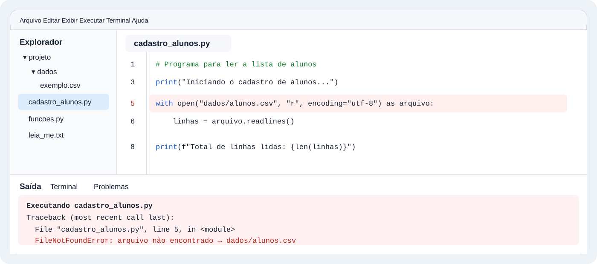

IA na Vida Real
Você recebe uma mensagem difícil de responder, precisa remarcar uma reunião, organizar a troca de celular, explicar segurança digital para alguém, criar uma arte para um evento, comparar propostas, entender um erro pela tela ou estudar um PDF grande. É nesse tipo de situação que a IA começa a mostrar utilidade real — desde que receba o contexto verdadeiro e que você continue responsável pelo resultado.
Antes dos laboratórios — botão só quando existe uma ação
Copiar
Quando aparecer Copiar, aquele texto foi preparado para você levar à IA naquela atividade. Caixas sem botão são material para ler, comparar ou analisar.
Várias IAs
Os botões de diferentes IAs aparecem apenas quando comparar respostas faz parte do experimento. Nos demais laboratórios, use uma ferramenta disponível que tenha a capacidade exigida.
1. A IA precisa da situação, não apenas da tarefa
Na vida real, “melhore”, “resuma”, “organize” ou “crie” quase nunca dizem o suficiente. O que muda uma resposta é saber onde aquilo será usado, quem será afetado e o que precisa permanecer verdadeiro.
Uma mesma frase pode precisar ficar mais firme numa cobrança, mais simples para uma pessoa leiga ou mais objetiva num e-mail profissional. A IA não conhece essas relações sozinha. Ela precisa que você mostre a situação e o resultado que espera.
Uso fraco
Você cola uma mensagem, mas pede apenas:
A IA pode suavizar demais, endurecer ainda mais ou mudar a intenção.
Uso orientado pela situação
Você entrega texto, relação e objetivo:
Frase para guardar
A IA não precisa apenas saber o que fazer. Ela precisa saber para que aquela resposta vai servir.
2. Fluxo prático de um bom uso
Os laboratórios seguem um mesmo raciocínio. Não é uma fórmula rígida de prompt; é uma forma de não perder o problema real durante a conversa.
3. Recusar um pedido sem criar um conflito desnecessário
Na prática, revisar uma mensagem não é só corrigir português. É preservar aquilo que você realmente precisa dizer.
Imagine esta situação
Uma pessoa próxima pede que você resolva algo de última hora. Você não pode assumir a tarefa e precisa dizer isso sem agressividade — mas também sem transformar a recusa em um “talvez”.
Mensagem original
O limite é legítimo, mas a frase pode soar como bronca.
Prompt para o experimento
FAÇA AGORA — compare pelo menos duas IAs
Copie o prompt uma única vez e execute exatamente o mesmo texto em pelo menos duas ferramentas. Não mude as instruções entre os testes.
PARE E COMPARE
As respostas preservaram a recusa? Alguma acrescentou desculpa ou promessa que você não deu? Qual diferença veio da ferramenta, mesmo com o mesmo pedido? O objetivo não é declarar uma “IA vencedora”, mas perceber que a saída precisa ser julgada.
4. Remarcar uma reunião sem parecer desorganizado
Um e-mail profissional precisa resolver a situação com clareza. A IA pode ajudar na forma, mas não deve inventar motivo, horário ou compromisso.
Imagine esta situação
Você tinha uma reunião marcada com uma equipe ou fornecedor para hoje à tarde. Surgiu um imprevisto real e você precisa propor nova data sem escrever um texto longo nem parecer que está simplesmente cancelando.
Texto base
FAÇA AGORA — use uma IA de texto
PARE E CONFIRA
O e-mail oferece uma solução concreta? A IA respeitou exatamente os horários e evitou inventar explicações?
5. Cobrar uma confirmação mantendo prazo e respeito
Quando existe prazo real, “deixar a mensagem mais educada” não pode apagar a urgência.
Imagine esta situação
Você está organizando uma visita técnica. A escola precisa fechar hoje a lista de participantes, mas algumas pessoas ainda não confirmaram. Depois do prazo, talvez não seja possível incluí-las.
Texto original
FAÇA AGORA — use uma IA de texto
Cuidado
Uma resposta “gentil” que elimina o prazo deixa de resolver o problema. Tom e conteúdo precisam continuar trabalhando juntos.
6. Trocar de celular sem descobrir depois que algo importante ficou para trás
A IA pode ser útil para organizar uma tarefa com muitas pequenas dependências — desde que você dê o cenário e revise a lista antes de executar.
Imagine esta situação
Seu celular novo chegou. Antes de apagar ou vender o aparelho antigo, você precisa lembrar de fotos, WhatsApp, contatos, autenticação em dois fatores, aplicativos bancários, arquivos e contas. Fazer tudo “de cabeça” aumenta a chance de esquecer algo.
Anotações soltas
FAÇA AGORA — use uma IA de texto
Aprendizado
A IA ajuda a organizar, mas você continua responsável por confirmar backups e seguir procedimentos oficiais antes de apagar o aparelho antigo.
7. Explicar autenticação em dois fatores para quem acha que “senha forte basta”
Traduzir tecnologia para linguagem comum é uma tarefa frequente: com família, clientes, alunos e colegas. Simplificar bem é manter a ideia correta sem despejar jargão.
Imagine esta situação
Uma pessoa próxima usa a mesma conta de e-mail para recuperar vários serviços. Ela tem uma senha forte, mas não entende por que deveria ativar autenticação em dois fatores.
Texto técnico
FAÇA AGORA — use uma IA de texto
O ponto crítico
Simplificar não é transformar uma proteção adicional em promessa absoluta. A resposta precisa ficar fácil sem ficar falsa.
8. Da ideia da arte ao prompt que será usado para gerar a imagem
Aqui o trabalho acontece em duas etapas. Primeiro uma IA ajuda você a transformar o briefing em um prompt visual bem especificado. Depois esse prompt é levado a uma ferramenta capaz de gerar imagens.
Situação
A escola fará uma feira de projetos de tecnologia. Você precisa de uma imagem-base para Instagram e cartaz, com espaço limpo para depois inserir data, horário e local em uma ferramenta de edição.
Pedido fraco
Isso mistura briefing e geração sem explicar composição, uso e limites.
ETAPA 1 — peça à IA para construir o prompt visual
PARE E CONFIRA antes da geração
O prompt produzido preservou o contexto escolar, o espaço para texto posterior e a proibição de inventar logotipos/informações? Se a IA acrescentou algo importante que você não pediu, corrija o prompt antes de levá-lo adiante.
ETAPA 2 — gere a imagem
Copie o prompt produzido pela IA na etapa 1 e leve-o para uma ferramenta que realmente ofereça geração de imagens. Gere uma primeira versão e compare o resultado com o briefing; não trate a primeira imagem como automaticamente aprovada.
O que observar
A imagem parece uma situação escolar plausível? Há espaço para a informação real do evento? A ferramenta inventou texto, marcas ou equipamentos incoerentes? O resultado pode ser adaptado sem perder a função visual?
9. Comparar dois orçamentos sem deixar a IA escolher só pelo menor preço
Uma decisão cotidiana fica difícil quando duas propostas parecem semelhantes, mas descrevem serviços de formas diferentes. A IA pode ajudar a organizar a comparação — desde que não invente qualidade, garantia ou especificações que não foram informadas.
Imagine esta situação
Seu notebook está lento e você pediu orçamento em duas assistências técnicas. Uma proposta é mais barata, mas traz menos detalhes. Antes de decidir, você quer descobrir se está realmente comparando a mesma coisa.
Dois orçamentos recebidos
FAÇA AGORA — use uma IA de texto
O que observar
A IA distinguiu preço de escopo? Transformou ausência de informação em “ponto a confirmar” ou inventou detalhes? Uma boa comparação deixa mais claro o que ainda precisa ser perguntado antes da decisão.
10. Pedir ajuda com um erro sem deixar a IA inventar o que não está na tela
Um print pode carregar informações valiosas: mensagem de erro, caminho de arquivo, código, status ou botão desabilitado. O uso inteligente começa separando o que a imagem realmente mostra das hipóteses sobre a causa.
Imagine esta situação
Você executa um programa ou abre uma ferramenta e aparece um erro que não entende. Em vez de tentar transcrever de memória, você envia uma captura da tela para uma IA que aceita imagens.

FAÇA AGORA — prepare a imagem antes do prompt
Faça uma captura de tela somente da imagem didática acima e recorte para não levar o restante da página. Depois, abra uma IA que aceite imagens, anexe essa captura e só então use o prompt abaixo. Assim você executa o laboratório com o mesmo material que a aula fornece, sem depender de um erro real no seu computador.
Pedido arriscado
A IA pode pular direto para uma causa provável e tratar hipótese como diagnóstico.
FAÇA AGORA — use uma IA que aceite imagens
Aprendizado
Imagem ajuda a trazer evidência real para a conversa. Mas reconhecer a mensagem não é o mesmo que provar a causa. Diagnóstico exige hipótese e teste.
11. Transformar uma apostila ou manual grande em roteiro de estudo
Quando um material tem dezenas de páginas, a dificuldade muitas vezes não é “resumir”: é descobrir a estrutura, separar o essencial do complementar e verificar se você realmente entendeu.
Imagine esta situação
Você recebeu uma apostila de aproximadamente 40 páginas para estudar para uma avaliação técnica. Há explicações, exemplos e comandos, e você não quer que a IA complete lacunas com conteúdo que não está no arquivo.
FAÇA AGORA — escolha o arquivo antes do prompt
Use uma apostila, manual ou outro PDF que você já tenha e possa compartilhar, de preferência um material que realmente precise estudar. Evite arquivos com dados pessoais, informações confidenciais ou restrições da escola/empresa. Anexe esse PDF a uma IA que aceite documentos e só depois envie o prompt abaixo. Se você não tiver um PDF adequado agora, não baixe um arquivo aleatório apenas para cumprir a atividade: leia o procedimento e retome este laboratório quando tiver um material real.
Pedido fraco
FAÇA AGORA — use uma IA que aceite PDF
Ponto de atenção
Se o documento envolver contrato, saúde, lei, dinheiro ou decisão importante, use a IA como apoio de leitura e organização — não como autoridade final sobre o conteúdo.
12. Quatro instruções mínimas que evitam muitos problemas
Este módulo não precisa transformar toda tarefa em engenharia de prompt. Mas algumas instruções simples são úteis sempre que precisão e fidelidade importam.
Sobre a fonte
- ✓Use o material enviado como fonte principal.
- ✓Não invente o que não estiver disponível.
Sobre a incerteza
- ✓Se faltar informação, diga o que precisa ser verificado.
- ✓Separe fatos observados de hipóteses ou sugestões.
Próximo passo
No próximo módulo, Comunicação com IA, você vai aprofundar justamente o que acontece quando a primeira resposta não basta: perguntas de esclarecimento, material de referência, refinamento, correção de rumo e conversas em várias etapas.
13. O resultado da IA é ponto de partida, não ponto final
Ao final de cada laboratório, a pergunta não é apenas “a IA respondeu?”. A pergunta é: “essa resposta funciona na situação que eu realmente tenho?”
A melhor resposta não é a que parece mais inteligente. É a que continua fiel à situação real e resiste à sua conferência.
O objetivo não é depender da IA. É aprender a trazer evidências, orientar a tarefa, observar limites e usar a resposta para pensar e agir melhor.